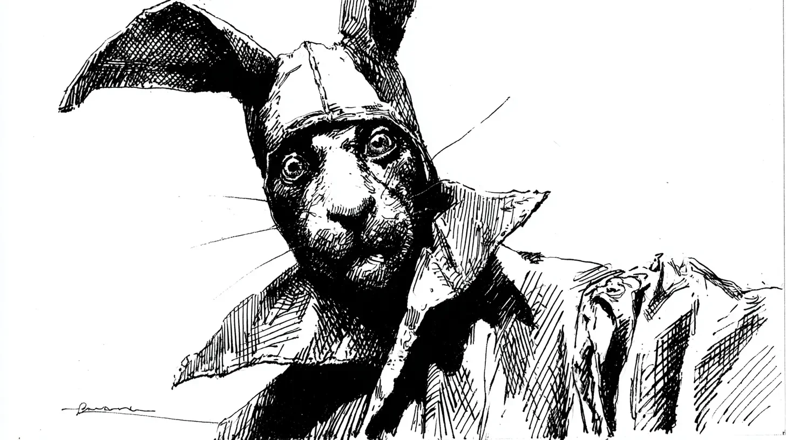

궁중의 광대로 살아온 세월이 어느덧 삼십 년을 헤아리게 되었다.
[Thirty years had passed since I began my life as a court jester.]
어느 날 아침, 거울에 비친 내 모습에서 길고 검은 귀가 솟아 있는 것을 발견했다.
[One morning, I discovered long, dark ears sprouting from my reflection in the mirror.]
처음에는 공포에 질렸으나, 곧 깨달았다. 이것이야말로 진정한 나의 모습이라는 것을.
[At first I was terrified, but soon I realized: this was my true form.]
귀족들은 내 귀를 보고 비웃었지만, 나는 그들의 속삭임을 모두 들을 수 있었다.
[The nobles laughed at my ears, but I could hear every one of their whispers.]
음모와 배신, 탐욕의 말들이 복도마다 울려 퍼졌다.
[Words of conspiracy, betrayal, and greed echoed through every corridor.]
누가 진정한 짐승인가? 가면 뒤에 숨은 자들인가, 아니면 본모습을 드러낸 자인가?
[Who is the true beast? Those hiding behind masks, or the one who reveals his true form?]
왕이 내게 물었다. “광대여, 왜 웃지 않느냐?”
[The king asked me, “Fool, why do you not laugh?”]
나는 대답했다. “폐하, 이제는 제가 웃을 차례가 아니기 때문입니다.”
[I answered, “Your Majesty, because it is no longer my turn to laugh.”]